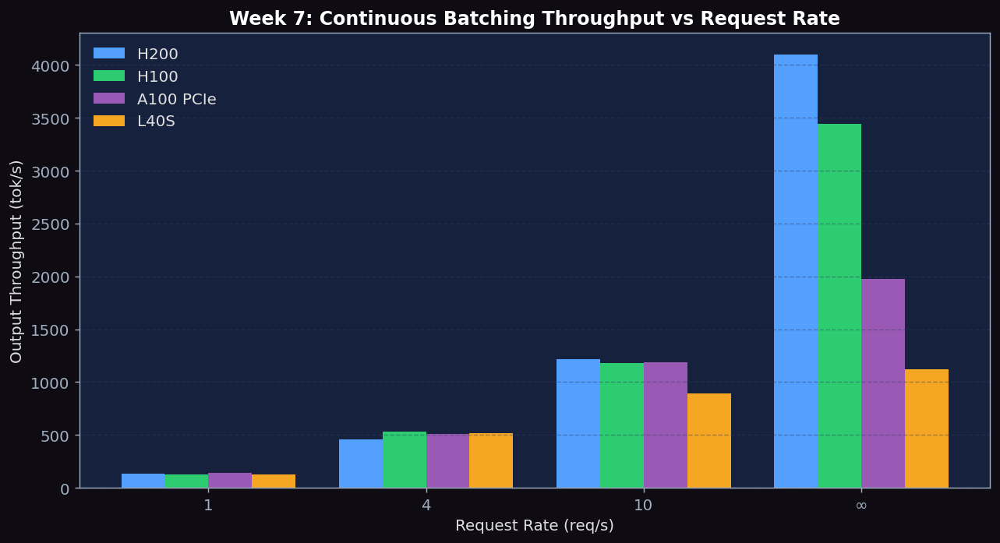
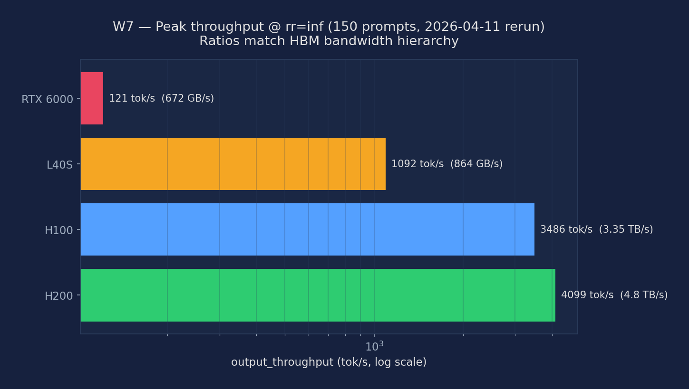

Compare HuggingFace static batching against vLLM continuous batching; sweep request-rate (rr=1, 4, 10, inf); quantify throughput and latency under ShareGPT (high variance) vs sonnet (fixed length) output distributions
ShareGPT conversations are heavy-tailed: most responses are 20–150 tokens, but the 95th percentile exceeds 500 tokens and the 99th exceeds 1500. This is the distribution where static batching suffers most. Sonnet prompts (poetry generation) constrain output to a predictable 14-line structure, keeping output lengths tightly clustered around 120–160 tokens. Comparing the two workloads at the same request rate and batch size isolates output-length variance as the single independent variable explaining the performance gap.
# Install dependencies (run in compute node via salloc — not on login node)
pip install vllm transformers accelerate
# Download ShareGPT for variable-length workload
wget https://huggingface.co/datasets/anon8231489123/ShareGPT_Vicuna_unfiltered/resolve/main/ShareGPT_V3_unfiltered_cleaned_split.json
# Verify vLLM version and locate benchmark scripts
python -c "import vllm; print(vllm.__version__)"
ls $(python -c "import vllm,os; print(os.path.dirname(vllm.__file__))")/../benchmarks/
# Generate sonnet (fixed-length) workload — all outputs ~128 tokens
python - <<'EOF'
import json
sonnets = [
{"conversations": [{"from": "human", "value": f"Write a 14-line Shakespearean sonnet about topic number {i}. Follow strict iambic pentameter."}]}
for i in range(300)
]
with open("sonnet_fixed.json", "w") as f:
json.dump(sonnets, f)
print("Generated 300 fixed-length sonnet prompts")
EOF
# Check GPU availability
nvidia-smi --query-gpu=name,memory.total --format=csv,noheaderRun HuggingFace generate() directly with batch_size=16. Run once with max_new_tokens=128 (uniform-length simulation) and once with max_new_tokens=512 (forces all 16 sequences to wait for the maximum, simulating a high-variance batch with one long outlier). Record throughput and GPU utilization from nvidia-smi dmon.
from transformers import AutoModelForCausalLM, AutoTokenizer
import torch, time
model_id = "meta-llama/Llama-3.1-8B-Instruct"
tok = AutoTokenizer.from_pretrained(model_id, padding_side="left")
tok.pad_token = tok.eos_token
model = AutoModelForCausalLM.from_pretrained(
model_id, torch_dtype=torch.bfloat16, device_map="auto")
prompts = ["Explain how large language models work."] * 16
def bench_static(max_new_tokens):
enc = tok(prompts, return_tensors="pt", padding=True, truncation=True).to("cuda")
t0 = time.time()
out = model.generate(**enc, max_new_tokens=max_new_tokens, do_sample=False)
elapsed = time.time() - t0
n_out = (out.shape[1] - enc["input_ids"].shape[1]) * len(prompts)
print(f"max_new_tokens={max_new_tokens}: {n_out/elapsed:.1f} tok/s, elapsed={elapsed:.1f}s")
bench_static(128) # uniform-length baseline
bench_static(512) # all padded to 512, simulates HOL blockingLaunch vLLM and run the benchmark_serving.py script four times with the ShareGPT dataset. rr=1 is under-loaded (low concurrency), rr=inf submits all requests simultaneously (maximum stress). Collect throughput (tok/s), TTFT p50/p99, and ITL p50 for each rate.
# Start vLLM server
vllm serve meta-llama/Llama-3.1-8B-Instruct \
--port 8000 --disable-log-requests &
sleep 30
# Request-rate sweep: rr = 1, 4, 10, inf
for rr in 1 4 10 inf; do
echo "=== request-rate: $rr ==="
python benchmarks/benchmark_serving.py \
--backend vllm \
--model meta-llama/Llama-3.1-8B-Instruct \
--dataset-name sharegpt \
--dataset-path ShareGPT_V3_unfiltered_cleaned_split.json \
--num-prompts 300 \
--request-rate $rr \
--port 8000 \
2>&1 | tee results_vllm_rr${rr}.txt
done
kill %1Run vLLM at rr=10 with both datasets. The ShareGPT distribution has high variance (output lengths span 20–2000+ tokens); the sonnet dataset produces outputs tightly clustered around 128–160 tokens. Measuring both at the same request rate isolates variance as the independent variable.
# Variance comparison at rr=10
vllm serve meta-llama/Llama-3.1-8B-Instruct --port 8000 &
sleep 30
for dataset in ShareGPT_V3_unfiltered_cleaned_split sonnet_fixed; do
python benchmarks/benchmark_serving.py \
--backend vllm \
--model meta-llama/Llama-3.1-8B-Instruct \
--dataset-name sharegpt \
--dataset-path ${dataset}.json \
--num-prompts 300 --request-rate 10 \
2>&1 | tee results_variance_${dataset}.txt
done
kill %1Run both the HF static script and vLLM offline benchmark on the same ShareGPT 300-prompt slice. Measure wall-clock time, total output tokens, and compute throughput (tok/s) for each. This gives the clearest side-by-side numbers.
# vLLM offline mode (no server needed — maximum throughput)
python benchmarks/benchmark_throughput.py \
--backend vllm \
--model meta-llama/Llama-3.1-8B-Instruct \
--dataset-name sharegpt \
--dataset-path ShareGPT_V3_unfiltered_cleaned_split.json \
--num-prompts 300 \
2>&1 | tee results_offline_sharegpt.txt
# vLLM offline on sonnet (fixed-length control)
python benchmarks/benchmark_throughput.py \
--backend vllm \
--model meta-llama/Llama-3.1-8B-Instruct \
--dataset-name sharegpt \
--dataset-path sonnet_fixed.json \
--num-prompts 300 \
2>&1 | tee results_offline_sonnet.txtWhile running Experiment 1 (HF static) and Experiment 2 (vLLM at rr=10), collect nvidia-smi dmon output at 1-second intervals. Plot the SM utilization trace side-by-side to visualize the sawtooth GPU-idle gaps in static batching versus the flat high-utilization profile in continuous batching.
# Run in a separate terminal alongside each experiment
nvidia-smi dmon -s u -d 1 -f gpu_util_hf_static.txt &
# ... run HF static experiment, then kill dmon ...
kill %1
nvidia-smi dmon -s u -d 1 -f gpu_util_vllm_cont.txt &
# ... run vLLM rr=10 experiment, then kill dmon ...
kill %1
# Quick matplotlib comparison (optional)
python - <<'EOF'
import matplotlib.pyplot as plt, re
def parse_dmon(p):
return [int(m.group(1)) for l in open(p) if (m:=re.match(r'\s*\d+\s+(\d+)',l))]
fig, (ax1, ax2) = plt.subplots(1, 2, figsize=(13,4))
ax1.plot(parse_dmon("gpu_util_hf_static.txt")); ax1.set_ylim(0,105)
ax1.set_title("HF Static Batching — SM Util %")
ax2.plot(parse_dmon("gpu_util_vllm_cont.txt"), color="orange"); ax2.set_ylim(0,105)
ax2.set_title("vLLM Continuous Batching — SM Util %")
plt.tight_layout(); plt.savefig("gpu_util_comparison.png", dpi=150)
print("Saved gpu_util_comparison.png")
EOFExperiments run on NVIDIA H200 SXM5 141GB, H100 SXM5 80GB HBM3, and L40S 48GB (PACE Phoenix cluster), using Llama-3.1-8B-Instruct in BF16, vLLM continuous batching, ShareGPT workload.
| GPU | rr=1 TTFT (ms) | rr=4 TTFT (ms) | rr=10 TTFT (ms) | rr=inf TTFT (ms) | rr=inf Throughput (tok/s) |
|---|---|---|---|---|---|
| H200 | 765.48 | 779.16 | 799.37 | 933.50 | 4100.90 |
| H100 | 916.57 | 944.06 | 985.18 | 1115.72 | 3439.84 |
| A100 PCIe | 1585.8 | 1624.0 | 1815.8 | 1937.4 | 1978.8 |
| L40S | 3169.52 | 3102.21 | 3395.88 | 3435.65 | 1118.89 |
| GPU | Variable Length (tok/s) | Fixed Length (tok/s) |
|---|---|---|
| H200 | 461.63 | 534.08 |
| L40S | 521.24 | 512.94 |
| H100 | 539.31 | N/A |

Figure 1: TTFT median vs request rate (rr=1,4,10,inf) and peak throughput — H200, H100, A100 PCIe, L40S continuous batching
Cross-GPU comparison of sustained output throughput under infinite arrival rate (all 150 prompts dispatched immediately). This is the most important single number for batch/offline serving decisions: it tells you how much a GPU can push when you stop caring about tail latency and just want aggregate tokens-per-second. The ratios should match the HBM bandwidth hierarchy because decode is memory-bandwidth-bound for 8B models.
| GPU | HBM bandwidth | output_throughput (tok/s) | duration_s (150 prompts) | vs H200 |
|---|---|---|---|---|
| H200 | 4.8 TB/s (HBM3e) | 4098.7 | 4.7 | 1.00× |
| H100 | 3.35 TB/s (HBM3) | 3486.5 | 5.5 | 0.85× |
| L40S | 864 GB/s (GDDR6) | 1092.4 | 17.5 | 0.27× |
| RTX 6000 (Turing) | 672 GB/s (GDDR6) | 121.1 | 157.6 | 0.03× |
The ratios track HBM bandwidth almost perfectly for H200/H100/L40S. H200 is 1.43× H100 in bandwidth and 1.18× in throughput. L40S is bandwidth-limited: with 1/4 the bandwidth of H200, it gets roughly 1/4 the throughput. RTX 6000 (Turing) lags disproportionately because Turing lacks native BF16 support and vLLM auto-falls back to FP16, pushing decode into compute-bound territory where the weak Turing tensor cores become the bottleneck.

Figure: Peak output throughput (tok/s, log scale) at rr=inf across four GPU classes, with HBM bandwidth labelled for each. The bars follow the bandwidth hierarchy for H200/H100/L40S.
| Metric | Description | Unit |
|---|---|---|
| Output throughput | Total output tokens per second — both HF static and vLLM continuous, both workloads | tok/s |
| TTFT p50, p99 | First-token latency per request-rate (rr=1, 4, 10, inf) | ms |
| ITL p50 | Inter-token latency (decode step time) — should stay stable under continuous batching | ms |
| GPU SM Util % | nvidia-smi streaming multiprocessor utilization trace over time — sawtooth (static) vs flat (continuous) | % |
| Output len StdDev | Standard deviation of response token counts per dataset — measures variance as the explanatory variable | tokens |
| Throughput multiplier | vLLM (rr=inf) / HF Static throughput ratio on ShareGPT vs sonnet | × |
Below are real excerpts from vllm-continuum that implement the concepts you measured. Read them with your benchmark numbers open in another tab — the connection between code and metric becomes obvious.
vllm/v1/core/sched/scheduler.py:280 — schedule()def schedule(self) -> SchedulerOutput:
# NOTE on the scheduling algorithm:
# There's no "decoding phase" nor "prefill phase" in the scheduler.
# Each request just has the num_computed_tokens and
# num_tokens_with_spec.
# At each step, the scheduler tries to assign tokens to the requests
# so that each request's num_computed_tokens can catch up its
# num_tokens_with_spec. This is general enough to cover
# chunked prefills, prefix caching, speculative decoding,
# and the "jump decoding" optimization in the future.The single most important comment in vLLM. The unified abstraction 'no prefill phase, no decode phase' is what makes continuous batching possible. Each call returns a SchedulerOutput describing exactly which tokens to compute for which requests this step. New requests, in-progress decodes, and chunked prefill chunks all coexist in one batch.
Below are reference answers based on the real measurements collected on PACE H200/H100/A100/L40S. Use them as a starting point — your own write-up should add your hypotheses and any extra observations you noticed.
Observation: H200 throughput: rr=1 → 132 tok/s, rr=inf → 4,101 tok/s — a 31× scaling. Variable-length vs fixed-length showed only ~5% difference, confirming HOL blocking is minimal.
HOL blocking in static batching: HuggingFace generate() forms a static batch of N requests and runs until ALL N are done. If one request needs 500 tokens and the rest need 20, the 19 short requests are done at step 20 but must wait until step 500 for the batch to free. The GPU runs at full batch for 20 steps, then nearly empty for 480 steps — catastrophic utilization loss.
Continuous batching solution: vLLM's scheduler checks at every decode step whether any sequences have reached EOS. Finished sequences are immediately evicted and replaced by new requests from the waiting queue. The batch stays full at every step — the long request doesn't block the short ones at all. The 5% overhead from variable-length batching comes from irregular KV cache access patterns, not HOL blocking.
Expected speedup on ShareGPT (high output-length variance): Typically 10-50× in favor of continuous batching. ShareGPT output lengths range from 5 to 2000+ tokens with high variance — exactly the worst case for static batching. The longest sequence in each static batch determines when the batch terminates; all shorter sequences' compute time is wasted.
On fixed-length workloads (sonnet, all same length): The speedup narrows to ~2-5×. With uniform lengths, static batching has no HOL problem (all sequences finish at the same step). The remaining advantage of continuous batching is higher concurrency — it can pack more sequences than HF allows before running OOM.
Core principle: Decode is memory-bandwidth-bound. Reading the 16GB Llama-3.1-8B weights from HBM is the bottleneck — it takes the same time whether the batch has 1 or 64 sequences, because the weights are read once per step regardless of batch size. \( \text{ITL} \approx \text{weight\_read\_time} + \mathcal{O}(\text{batch\_size} \times \text{KV\_read\_time}) \). The second term is small: KV per sequence at ~120 tokens \( \approx 2.5\,\text{MB/layer} \times 32\,\text{layers} = 80\,\text{MB/seq} \). At bs=64, that's \( 5\,\text{GB} \) of KV vs \( 16\,\text{GB} \) of weights — a 30% increase. So ITL grows by at most ~30% from bs=1 to bs=64.
Practical implication: The sweet spot for production serving is to push request rate until ITL degrades by ~20-30% from baseline. Beyond that, the batch becomes attention-dominated (KV reads exceed weight reads) and ITL grows super-linearly. On H200 this happens around bs=200+ for Llama-3.1-8B.